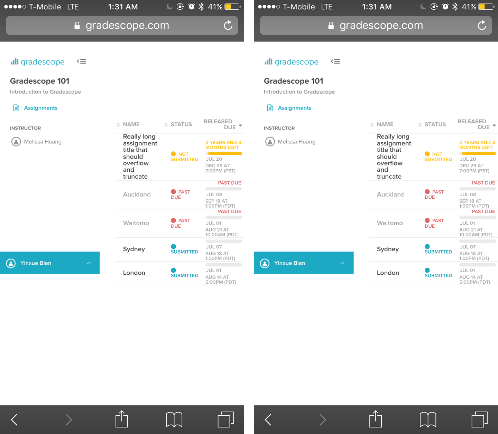
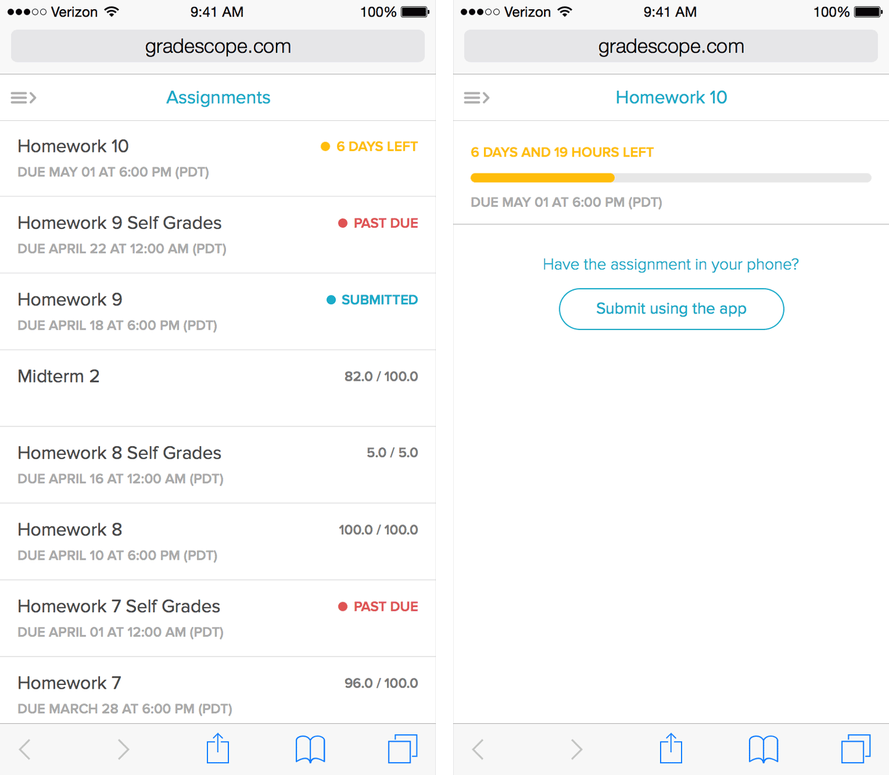
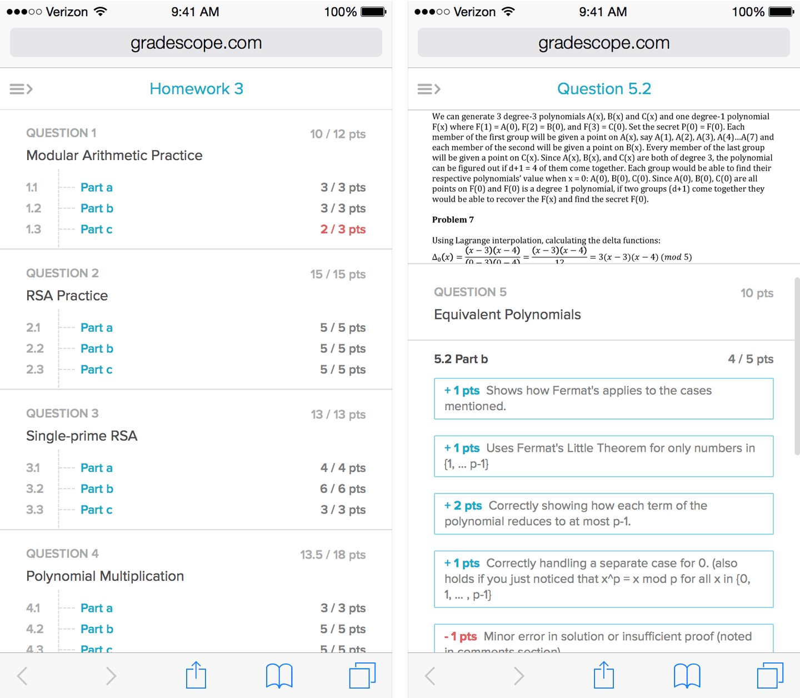
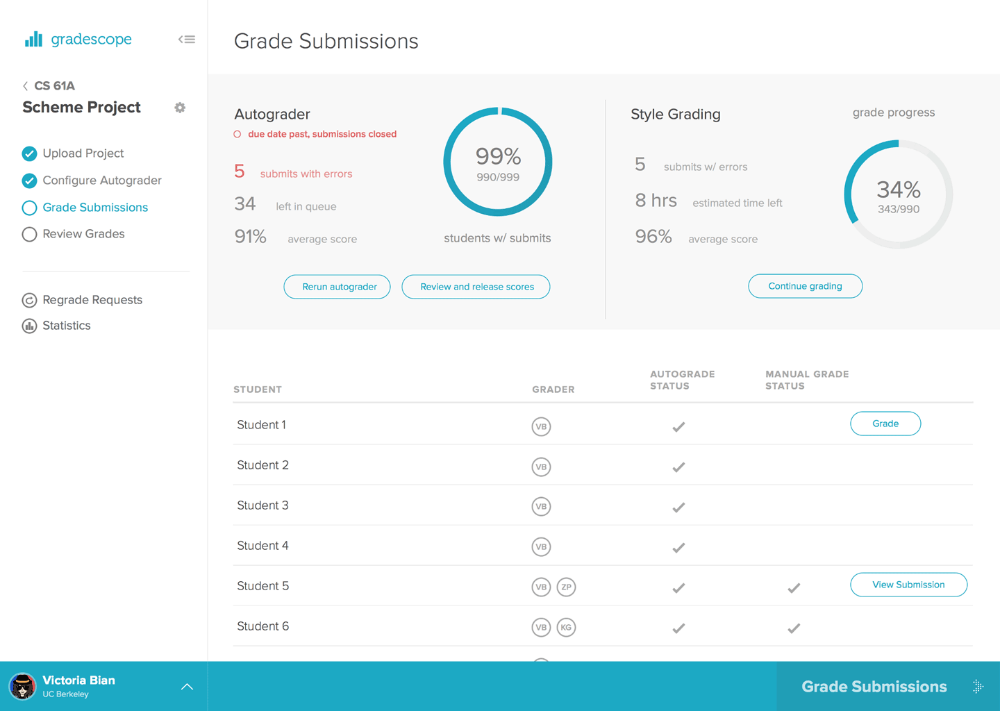

Intro
If you have ever been a college student, you must have experienced the pressure of submitting your assignments on time, and the confusion after you receive the grades and wonder why your points got taken away.
As a junior at Cal, I totally get it. Pulling all nighters is definitely not uncommon. It’s never easy to keep track of all the assignment deadlines and make sure we understand the materials. Sometimes, you may wonder how we can ever keep up with all of our assignments and exams.
That’s why you have Gradescope.
What is Gradescope
Gradescope is the life saver for both students and instructors at UC Berkeley. It was initially created as an online-grading platform for CS 188 instructors. Over the past few years, it has rapidly spread to over 50 schools and expanded features targeting college students.
How it works
Before we get into the design, I want to show you a graph of its workflow:

Basically, for instructors, all they have to do is:
- Create an assignment on Gradescope
- Scan and upload student submissions (exam) or let students themselves upload their submissions online (usually homework)
- Grade assignments directly online by applying rubrics
- Send out grades and give feedbacks to students
The workflow sounds simple enough but Gradescope is a way more complicated application because instructors are used to grading on physical papers for years.
To be honest, I had a very hard time understanding the process when I first joined Gradescope. This is because designing for such a feature-packed app like Gradescope is almost like designing for Microsoft Office. It was still a good opportunity to hone my UX design skills as I learned how to organize these myriad features into a lightweight, understandable interface.
Featured Projects
During my time spent as a part-time consultant and intern at Gradescope, I worked on multiple projects, such as Assignment Statistics, Syllabus, Autograder, etc. I would like to show you a couple of the projects I’ve worked on and explain how I came with the solutions for them.
Project 1: Assignment Statistics
Assignment Statistics was the first stab I took at designing for new features for Gradescope. Assignment Statistics allows instructors to get more insightful data about how students perform on their assignments and exams.
Problem
Gradescope is not just an online grading platform. We had already reduced instructors’ time spent on grading by more than a half. But given the data on assignments, we could do better in making the best use of them by designing a means of visualizing students performances on assignments.
One value proposition of this feature is that instructor should be able to view the score distribution for each question so that they can learn about the difficulty of each question and focus on those that students struggle the most. Another super useful functionality that Assignment Statistics provides is viewing score distribution by topics. By doing so, instructors are able to get a big picture of students’ understanding on the course materials by topics.
Challenge
Since this feature is targeting instructors, professors, and teaching assistants and I have never been a TA myself, I first asked these users to understand what they need.
A couple of questions I asked before prototyping:
- What do instructors want to get from the statistics page?
- How to reduce the content to just enough for instructors to get what they need?
- How to make the interface fit the entire user flow?
Prototype
After consulting with Arjun, the co-founder of Gradescope, who was also a previous TA of CS 188, I made a few sketches focusing on the layout and locked down the information we need to show.
We first thought about a split view. Split view works well on showing the graph itself and detailed information at the same time. And because our grading page uses the sidebar approach with PDF on the left and rubric details on the right, split view can keep our overall style consistent. However, this approach has many flaws:
- Split view doesn’t take advantage of blank space, instead, all the information is crammed on the sidebar, making the page feel very unbalanced
- Using sidebar doesn’t help with the hierarchy because the width of sidebar is limited, which makes data incomparable at a glance
- Similarly, split view largely limits the amount of information we can display

After brainstorming different layouts, we proposed a slightly different approach featuring the graph as a main action item taking the most space and table view as a means of comparing data across questions or topics.
Question Statistics
Question Statistics page is the main view of our Assignment Statistics feature. On this page, instructors can interact with the histogram by clicking on individual questions (shown as vertical bars), and information regarding the specific question will also get updated (shown as percentages below the graph). Meanwhile, the table view allows instructors to easily compare average scores across all questions.
Statistics Detail
Statistics Detail page is what users will see after clicking on a specific question on the previous Question Statistics page. This page provides even more insightful details on a particular question, like the number of students with each rubric applied. In addition, rubrics explain the reason why students gain or lose points on a question. By showing the number of students, instructors can know the exact reason why students did well or poorly on a question.
Topic Statistics
Simply toggling between Show Questions/Show Tags will take you to this page: Topic Statistics, one of our most promising features. As mentioned, sorting the questions in terms of topics (tags) allows instructors to understand students’ strength and weakness on different topics.
Summary
One of the biggest takeaways from designing Statistics page is how to use space efficiently as elements get added dynamically, instead of a static page. Basically, I learned never to limit my interface to only the space I’m given.
Assignment Statistics is a major milestone of Gradescope in transforming the product from just an online grading tool (grade faster) to an ultimate informative portal for instructors (teach better). Eventually, it will benefit students the most.
Project 2: Mobile Website
When I was doing user tests, I discovered that most students would like to check their grades right after they get the email notifications, which usually happens on mobile phones. As such, the mobile experience should be designed around this: concise, straightforward and responsive.
Problem
When I first started this project, however, the mobile version for students was basically the same as the desktop version. Just think about viewing a page all the information crammed into a tiny screen on a iPhone 4S — students have to go through this every time they log in on mobile phones.
Challenge
The question, then, is how should we approach responsive design for a web app as complicated as Gradescope?
The primary challenge when designing for mobile was to figure out the information that users would most likely need on a small screen. The second challenge is consistency. While reducing the amount of information displayed, we still had to maintain the overall experience to be consistent with the desktop version.
Taking into account of the front-end constraints, I listed out the key problems that I needed to solve:
- What are the key features students usually use on mobile?
- How do we tweak the existing layout to fit a tiny screen?
Prototype
Before prototyping the mobile version, we discussed the key features we wanted to keep on mobile. Based on the feedbacks that we gathered from students, we decided to keep the following features for mobile:
- The dashboard, showing all courses
- The assignments page, showing all assignments within the course along with deadlines and grading status
- The assignment details page, offering a preview of all questions on a assignment along with points
- The question details page, showing detailed rubrics on a question
What we tried to achieve for mobile was to make all the steps clear and easy to follow which could also help with navigation between pages. Basically, the workflow for a student using our mobile website would be: log in -> dashboard (select a course) -> assignments (select an assignment) -> assignment details (select a question) -> question details (view score details & rubrics).
Because we will have the mobile app in the near future, we wanted to keep the primary use case for our mobile website to be very lightweight. Students could view assignments, but we took out features like submitting assignments via mobile because this is not the primary use case of the mobile website.
Navigation
To design the navigation for mobile, I focused on three things: Consistency, Scalability, and Usability. Therefore, to keep it consistent with mobile, I opted for the sidebar approach to preserve the hierarchy. Our users are quite familiar with the current workflow and we didn’t want to confuse them by introducing a new navigation.
In sidebar, users can perform global actions on the dashboard such as editing account and help, which is also consistent with the web version. Once the user clicks on a specific course, they will be directed to the assignments page, where they can then use the sidebar to switch between courses.
Assignments
For the assignments page, instead of cramming all the information into a tiny screen, I started with getting rid of the trivial information from the desktop version. For example, the progress bar indicating the days left before due could take too much space on mobile (see desktop assignments page below). Although it provides a quick bird’s eye view on the website, it’s not necessary on mobile where you could use the limited space more efficiently by just color coding the status of assignments.
Assignment Details have three main states: due soon, past due and graded. For the first two states, when student clicks on a assignment they will see detailed information. This is where I put the information taken out from the desktop version back to mobile as a detailed view. From this page, we also decided to promote our app by showing how students can submit their assignments directly using the Gradescope app.
Graded Assignment Details
Graded Assignment Details, on the other hand, was a different story.
After the assignment was graded, students will get scores for the entire assignment and for each question. Following the workflow: course -> assignment -> assignment details, we needed to have an overview for the graded assignment. Here, students can see how well they performed on the assignment as a whole, as well as each question. On desktop, the assignment PDF and overview are shown side by side. Since the mobile website in portrait doesn’t have that much horizontal space, I decided to take out the PDF. Instead, students can view the PDF once they click to review the specific question.
On desktop, students can view the rubrics (reasons about how the question is graded) along side the PDF. For mobile, I kept the same design because students complained about how cumbersome it is to scroll all the way to the bottom of the PDF to see the rubrics. Therefore, in my design, I gave users the slide action to see details about the question and still kept the full PDF view of the assignment for reference.
Summary
Throughout the course of designing for mobile, I learned to suppress my tendency to go for fancy ideas and opted for safe, utilitarian choices. When we scale down our desktop version, it’s better to derive the design from the existing interface rather than to make a whole new experience for users. Even from an engineer’s point of view, it’s easier to maintain the existing structure of their code and make it reusable instead of coding a new one from scratch.
Project 3: Code Grading
The primary target user for Gradescope is student and faculty in computer science department. As we were interviewing with CS students and instructors, we realized that one important use case was grading code snippets.
I worked with Eric Liang for the Code Grading project, one of our most highly requested features. Code Grading on Gradescope simplifies the process of submitting, testing and grading programming projects of computer science classes. Here’s how we approached designing the Code Grading project.
Problem
Instructors for computer science courses usually ask students to test and submit their programming projects through many different portals such as terminal, Github, and OKPY. In Berkeley, CS 61A uses OKPY, CS 61B uses Github, and each class has different means of submission. This means that if you are enrolled in multiple CS courses, you will have to switch back and forth for your assignments.
Some CS courses also involve manual grading. For example, part of the CS 61A grades is determined by the coding style of the projects, which is manually graded by TAs.
As such, our goal was to create an integrated platform that does testing, submission and grading all in one. With Code Grading, Gradescope’s feature set will extend beyond just PDF assignments to code snippets, and possibly many other formats in the future.
Challenge
Unlike PDF assignments which usually contain one file for template and submission, most coding projects contain more than one file.
Generally, a CS project contains:
- Starter files for students to start the project
- Test files to help students debug locally before submission
- Autograder script for instructors to grade students submission
- Supporting files mainly used for configuration purpose
- Free writing file for students to decide what they want to code
Therefore, the first challenge for me and Eric was to come up with a solution for instructors to easily manage their project files.
Starting from file management, we quickly walked through the user flow for instructors: Upload Project Files -> Configure Autograder -> Grade Submissions (Auto & Manual) -> Review Grades
Notice that grading programming projects is quite different from our current workflow. Whereas our current workflow is very linear and unidirectional, grading programming projects contains two simultaneous steps: auto grading and manual grading. Instructors can run autograder anytime to test out students’ submission, yet at the same time they can review students’ coding styles by checking their submissions manually.
This is our second challenge — how to design the interface to accommodate the non-linear workflow and tie back to our existing workflow.
The third challenge is more specific to the manual grading part. Basically, the manual grading is a process of providing comments and giving a score of the overall coding style. The challenge is to streamline the process of giving comments on instructor side and provide an intuitive means of viewing comments on student side.
Project File Management
For the first step of the workflow, we realized that we had never had a type of assignment that had multiple files. We know that in the near future, we will have more assignments like coding project. We didn’t want to limit the ability of what users could do on Gradescope. Therefore, we decided to build a tangible file management interface for users to take full control over their files.
I collaborated with Eric on designing the interface for project file management. We started with an idea of a “drag and drop” for project files. When instructors upload files, they can just drag their project folders directly onto the interface. By clicking on individual or multiple rows, users can modify files such as deleting, moving and marking as student editable.

Grade Submissions
For grade submission part, since the workflow is not unidirectional, we needed an interface that could accommodate both manual and auto grading progress. We decided to bring a dashboard view as a means to keep track of both auto and manual grading.
Eric was in charge of the design for the dashboard. This is his mockup:
Manual Grading
Manual grading is the step when instructors manually look at students’ submissions and leave comments and scores for their coding style. The goal of this part is to allow users to easily switch between files, comment on specific lines of code and review all the comments based their contexts.
For instructors, the workflow starts with opening a student’s submission files, then reviewing their code line by line, and commenting on the lines of code that can be improved in terms of style. In the comment view, instructors can easily create a comment by clicking on a specific line. Other instructors can collaborate by editing existing comment or appending another comment.


Although comments is the primary feature, students and instructors get easily get lost in hundreds lines of code when trying to find the part that has been commented on. We needed a view for users to review their comments and get a quick glance of all the comments without switching between files and scanning through the code.
This is why I designed Preview. For students, they can view the comments in the context of the problematic code. For instructors, Preview provides a summary of all the comments before they give the final score for the submission.


Summary
This is one of my favorite projects that I worked on with Eric. Throughout the entire design process, I learned a lot about how to refine user flow from Eric. Before we started prototyping, we went through two runs of brainstorming and storyboarding. I learned that sketching on a whiteboard is a completely different experience from drawing on a sketch paper. When we were storyboarding, we had a lot of white space to fill out the use cases and draw out the possible scenarios that users could encounter. By doing this, we could clearly see a big picture of the user flow as well as the more detailed interactions.
Retrospective
Here are three things I’ve learned over the summer as a designer:
Communication
Communication is the key to working with a small team like Gradescope. I asked other engineers and designers a lot of questions before I started prototyping because any misunderstanding in the design stage will lead to confusion among the team, and eventually among the users.
Collaboration
I used to get really attached to my own thoughts and design until I opened up to collaborate with other designers and engineers at Gradescope. By talking to other designers, I was able to think outside of the box instead of sticking with our own way of thinking. For instance, I learned about perform ing usability tests and sketching user flows from designers and learned more about backend constraints around the designs that I’ve made.
Constraints
Speaking of constraints, I learned that for every design I made, I had to give a second thought to work around the technical constraints. As a designer, it is good to always think creatively and push pixels to perfection, but it is also crucial to be able to design within the constraints. Good design doesn’t have to be very detailed and beautifully illustrated, as long as it’s optimal. That is, it can be iterated fast (usable) and deployed immediately (implementable).
Special thanks to Sergey and Arjun for leading the team, Kevin for mentorship, and big thanks to the entire team for working so hard to make everything happen. You’re the best! Go Pandas!